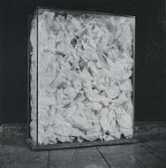

LINKS + MISC.
UCSD LINKS:
UCSD Dept. of Mathematics
UCSD Algebra Seminar
Groundwork Books
Art of Espresso
University Art Gallery
Visual Arts Gallery
gallery@calit2
Darkstar Science Fiction/Fantasy Lending Library
Stuart Collection
UCSD: A Built History of Modernism, archdaily.com, 19 May, 2013
SOME MATH FRIENDS + COLLABORATORS:
Daniel Barter (Australian Nat'l Univ.)
Marcel Bischoff (Ohio University)
Alex Chirvasitu (SUNY at Buffalo)
Jingcheng Dong (Nanjing Agricultural Univ.)
Özlem Ejder (Colorado State)
César Galindo (U. de los Andes)
Nicolle Sandoval González (UCLA)
Miodrag Iovanov (Iowa)
Masaki Izumi (Kyoto U.)
Corey Jones (Ohio State)
Ellen Kirkman (Wake Forest)
Giuseppe Martone (Michigan)
Susan Montgomery (USC)
Cris Negron (UNC Chapel Hill)
Richard Ng (Louisiana State)
Dave Penneys (Ohio State)
Julia Plavnik (Indiana)
Brendon Rhoades (UC San Diego)
Dan Rogalski (UC San Diego)
Eric Rowell (Texas A&M)
Peter Schauenburg (U. de Bourgogne)
Kenichi Shimizu (Shibaura Institute of Technology)
Chelsea Walton (UI Urbana-Champaign)
Hans Wenzl (UC San Diego)
James Zhang (Washington)
PROGRAMS FOR GRAD STUDENTS:
NSF East Asia and Pacific Summer Institute
AMS Travel Grants
AMS Mathematics Research Communities
MSRI Summer Graduate Schools
MATH RESOURCES
The online database of Vertex Operator Algebras and Modular Categories
On-line Encyclopedia of Integer Sequences
J.S. Milne's homepage
Encyclopedia of Mathematics
Oberwolfach Photo Collection
Atlas of Finite Group Representations
L-function and Modular Form Database
Encyclopedia of Triangle Centers
MSRI lecture videos
BIRS lecture videos
UC Davis front for arXiv.org
Detexify
ShareLaTeX
Wolfram|Alpha
Paul's Online Math Notes
MIT OpenCourseware
Purplemath lessons on algebra + pre-calculus
Eric Weisstein's Encyclopedia of Scientific Books
Wolfram MathWorld
SAN DIEGO:
KPBS 89.5 FM
San Diego Reader
Museum of Contemporary Art San Diego
House of Pacific Relations International Cottages in Balboa Park
San Diego Canyonlands
San Diego Public Library
Verbatim Books and Controversial Bookstore in North Park
Mysterious Galaxy Books in Clairemont
The Big Kitchen Cafe in South Park
The Black and Nico's in Ocean Beach
The Cambodian Buddhist Society of San Diego Temple Wat Khemararatanaram
City Farmers Nursery and The Tower Bar in City Heights